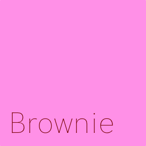

Brownie Support
Brownie Support
Brownie is a text utility launcher that helps you transform clipboard
text, reuse clipboard history, and speed up repetitive text work.
Download
Get Brownie for your operating system.
Contact
If you need help or want to report a problem, use one of the options below.
What Brownie Does
- Transform clipboard text with a global shortcut
- Chain multiple commands with
|
- Reuse previously copied text from clipboard history
- Choose which commands are enabled from settings
Quick Start
- Copy text to the clipboard.
- Open Brownie with the shortcut.
- Enter one or more commands.
- Copy the result back to the clipboard.
The default shortcut is Ctrl + B. You can change it from the task tray.
Common Features
- Case conversion
- camelCase and snake_case conversion
- Full-width and half-width conversion
- Replace, remove, and extract text
- CSV and TSV conversion
- Base64, URL encode/decode, and hash utilities
Frequently Asked Questions
Brownie does not open with the shortcut
Check whether another app is using the same shortcut. You can change
the shortcut from the task tray menu.
The clipboard text did not update
Recopy the source text and try again, or use the reload action inside
Brownie.
I want to use previous clipboard text
Open the clipboard history panel and select the text you want to reuse.